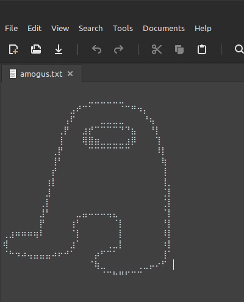
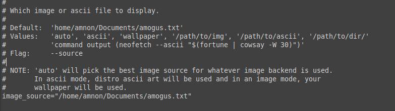

Susrprisingly,this is actually not that hard to do.
like shown here:
after you've done that, go into your home folder and mark "show hidden files" then, you will find the config folder and inside it the neofetch folder
inside, you will find a config file which you will want to double click and you will see all the info you can find in your actual neofetch but in code.
find the part where it says this:
and replace the "default" and "image source" from auto this what you see in the picture above
and you're done!! enjoy your reddit karma and self appreciation!